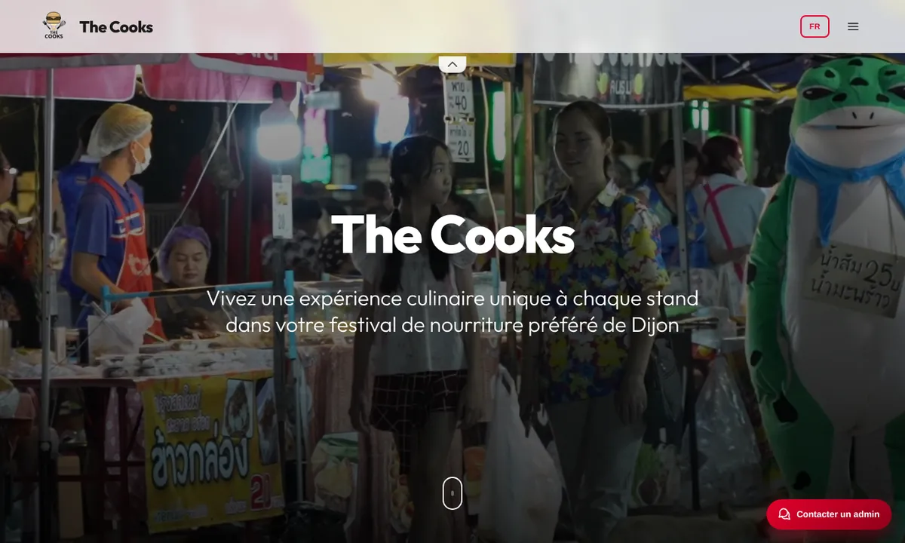
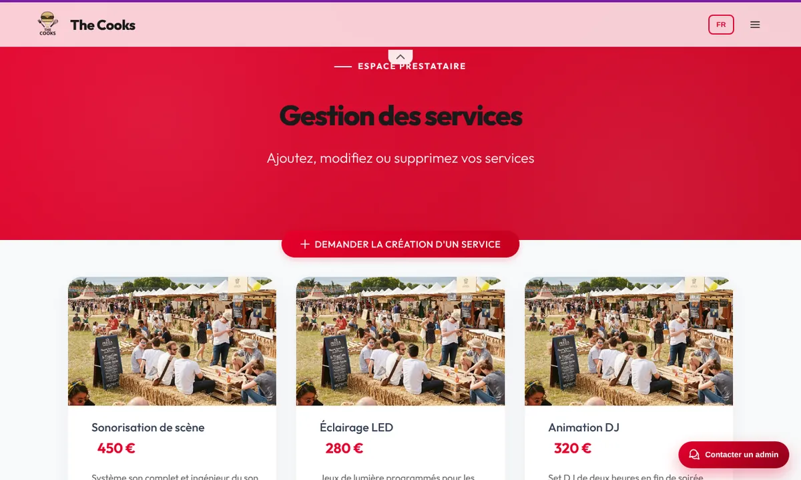
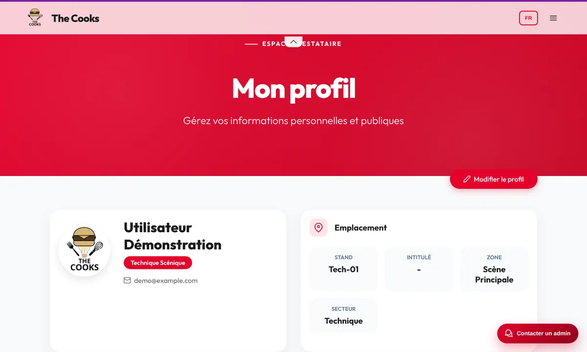
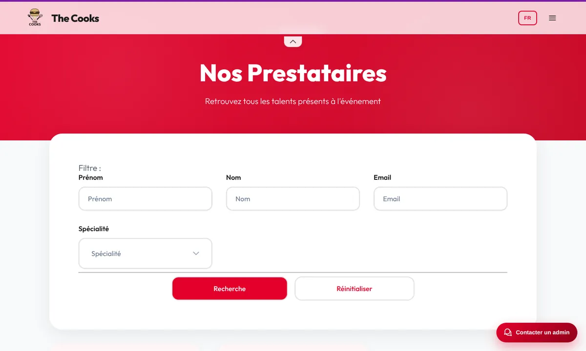

SAE S3-S4 · projet phare
The Cooks, plateforme web d'un festival culinaire
Une plateforme complète pour un festival culinaire fictif, utilisée par le public, les prestataires, les organisateurs et les administrateurs, chacun avec ses propres droits.
- Période
- Sept. 2025 – mars 2026
- Cadre
- SAE S3-S4
- Équipe
- 5 étudiants
- Mon rôle
- Espace prestataire (front + API)
Dépôt privé de l'équipe : code sur demande.
01Contexte
- Cadre : SAE des semestres 3 et 4, de septembre 2025 à mars 2026.
- Équipe : 5 étudiants, dépôt Git commun d'environ 270 commits.
- Mon rôle : responsable de l'espace prestataire, côté interface et côté API (37 commits).
02Objectif
Fournir à un festival culinaire fictif, « The Cooks », une plateforme web complète, utilisée par le public, les prestataires (traiteurs, techniciens…), les organisateurs et les administrateurs, chacun avec ses propres droits.
03Fonctionnalités du projet
Billetterie et billets, carte interactive du site, paiement cashless, réservation de camping et de parking, réservation de scènes, liste et pages publiques des prestataires, messagerie avec l'organisation, statistiques, site bilingue français / anglais.

Première page vue par le public : présentation du festival et accès aux rubriques (billetterie, carte, prestataires). Le sélecteur FR en haut à droite change la langue du site ; le bouton « Contacter un admin » ouvre la messagerie avec l'organisation.
04Ma partie : l'espace prestataire
- Tableau de bord du prestataire connecté : profil, services, réservation de scène, configuration.
- Gestion de ses services (création, modification, disponibilité).
- Page publique de chaque prestataire et liste filtrable (nom, e-mail, spécialité).
- Accès de l'organisateur à l'espace d'un prestataire pour corriger ses informations.
- Traduction de ces pages en anglais.

Après connexion, le prestataire arrive sur son tableau de bord. Les quatre boutons mènent à son profil, à ses services, à la réservation d'une scène et à la configuration. Cette page n'est accessible qu'aux comptes prestataire, organisateur et administrateur (défi 1).

Chaque service a son image, son prix et sa description. Le prestataire demande la création d'un nouveau service, et la liste se met à jour sans recharger la page grâce au store Pinia (défi 3).

Le profil réunit les informations publiques (spécialité, e-mail) et l'emplacement sur le festival : stand, zone et secteur. « Modifier le profil » ouvre la configuration, que l'organisateur peut aussi ouvrir pour corriger les informations (défi 2).

Le public retrouve les prestataires présents sur le festival et peut filtrer par prénom, nom, e-mail ou spécialité. Chaque prestataire mène à sa page publique.
Captures réalisées sur une instance locale, avec des données fictives.
05Architecture
- SPA Vue 3
- Pages par rôle, état partagé dans des stores Pinia, routes protégées par rôle, traduction français / anglais.
- API Express
- Routes REST (prestataires, services, billets, cashless, messagerie), authentification JWT et Google OAuth, rôle vérifié sur chaque route sensible.
- MariaDB
- Modèles Sequelize : utilisateurs, services, scènes, transactions et messages.
Déploiement continu par GitHub Actions.
06Défis et solutions
- Réserver des pages à certains rôles.
Un visiteur pouvait ouvrir l'URL de l'espace prestataire. Chaque route déclare les rôles autorisés, le routeur les vérifie avant d'afficher la page, et l'API refuse aussi la requête : la protection ne repose pas que sur l'interface. J'ai ajouté des tests unitaires sur ces règles.
- Laisser l'organisateur modifier un prestataire sans lui donner tous les droits.
Routes API dédiées qui vérifient le rôle de l'appelant, et réutilisation des écrans du prestataire en mode « édition par l'organisateur ».
- Des pages qui n'affichaient pas les données à jour après une modification.
Rechargement ciblé des données depuis le store Pinia, au lieu de recharger toute la page.
07Évolutions possibles
Paiement réel pour la billetterie, application mobile pour le cashless.